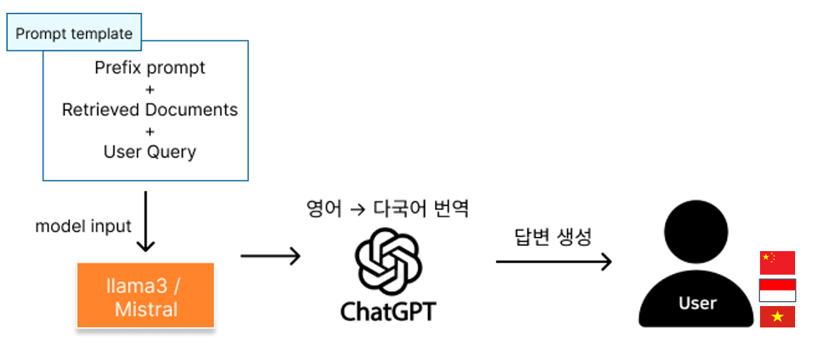
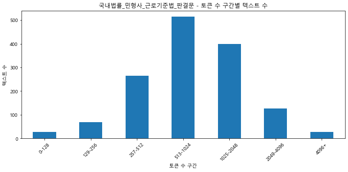
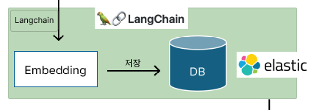

本プロジェクトは、ソウル市が主催する社会問題解決のための生成型AI競技大会に参加しています。
私たちのプロジェクトは、増加する外国人労働者に対して減少する外国人労働者支援センターを社会問題として取り上げており、現在、予選を全体4位で通過し、本選に進出した状態です。
(8月2日本選大会)
主な特徴
- 外国人労働者が知りたいこと（法律、ビザの質問など）についてチャットボットに相談します。
- チャットボットはデータに基づいて、法的情報、例、具体的な解決策を提供します。
- さらなるカウンセリングが必要な場合、アプリ内から直接相談のスケジュールを組むことができます。
- オフライン相談の労力を減らすため、カウンセラーにチャットの要約を提供し、プロセスをよりスムーズにするのに役立てます。
私の仕事
ホームページからテキストをクロール/前処理後、検索(Retrieval)のための文書Chunking/Embeddingを行い保存
DPR/BM25などの検索アルゴリズムを活用し、ユーザークエリと関連性の高い文書を返すロジックを構成
MySQLデータベースを活用し、顧客とコンサルタントの相互作用から生じるデータを収集・保存します。
パイプラインを構築し、生データを処理し、埋め込み（embedding）など分析可能な形式に変換します。
主な課題と解決策の議論

課題1. データ収集と前処理
私たちは、ユーザーの質問を大きく4つのカテゴリーに分類しました（法律、ビザ、相談事例、採用）。
私は各カテゴリーごとに政府のウェブサイトやオープンデータポータルからテキストを収集し、構造化された形式に変換しました。
<データ例>
すべてのデータ収集が行われた後、各辞書のキー値をすべて統合してチャンクデータを構築しましたが、
上記の例で日付や事件番号のように重要性が低いキー値は除外してドキュメントを構成しました。
前処理過程

検索を活用するためには、収集した文書の細心のチャンキング作業が必要です。
私たちのモデル（llama3）の入力を推定するために、収集した文書をllama3 tokenizerに基づいてトークンを計算し、視覚化しました。
モデリングを担当する同僚が、1文書あたり1000トークン前後を要求しました。
そのため、収集したデータの文書あたりのトークン数を128、256、512、1024...などの入力長単位で視覚化し、
1024トークンを大幅に超えるものに限って分割作業を行いました。
課題2. 多言語処理方法
開発初期にユーザーの多様な外国語入力をどのように処理すべきか悩みました。
多言語モデルの使用を検討しましたが、最終的にパフォーマンスのために英語モデルを中心に入出力をGPT apiを通じて
翻訳する方式で実装することになりました。私たちはパフォーマンスが実証されたmistral-7b/llama3モデルを最終選定しました。

課題3. RAG（Retrieval-Augmented Generation）の活用
開発初期には、ユーザーの多様な外国語入力をどのように処理すべきか悩みました。多言語モデルの使用を検討しましたが、各言語の入力ごとに異なるモデルを使用するのは非効率的だと考えました。
最終的に、性能を重視して英語モデルを中心に据え、入出力をGPT APIを通じて翻訳する方式で実装することにしました。私たちは性能が検証されたmistral-7b/llama3モデルを最終選定しました。
課題4. STT/TTS有線電話接続(進行中)
現在、Twillioを活用して実装予定です。